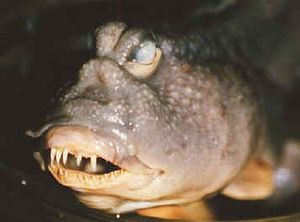

Diseño inteligente
 De: La Frikipedia, la enciclopedia extremadamente seria.
De: La Frikipedia, la enciclopedia extremadamente seria.
Los hermanos Bbjornstrand, ejemplo de Excelente Diseño Sueco
El argumento del Diseño Inteligente es la teoría de que todo lo que existe en el universo está demasiado bien hecho para existir porque si, y por lo tanto es de diseño. Esto quiere decir que ha debido de ser creado por un tío muy listo, probablemente un Monstruo de Espagueti Volador o un Barbudo Santo . Sin embargo, los defensores del diseño inteligente no quieren decir quien es el diseñador, de donde ha salido ni para que cojones ha diseñado tantas cosas inútiles. Y es que la teoría del Diseño Inteligente es una teoría puramente científica, saltándose únicamente las partes del método científico contrarias a la propia teoría.
La teoría del Diseño inteligente fue propuesta en su origen por los famosos hermanos Jedediah y Jose Ramón Bbjornstrand, pioneros del análisis de ADN con escarpia y paletín, cuando analizaban el ADN de su familia y encontraron un gen que decía "MADE IN CHINA" en la solapa de los calzoncillos incorruptos de su bisabuelo. Esto les hizo deducir la existencia de un creador, seguramente chino y con un gusto excelente. Pero sucesivos experimentos genéticos con las cabras, ovejas y gallinas de su granja les convencieron de que, gracias a Casa Blanca.
Argumentos a favor
 ¿Diseño inteligente? ¡Tócame los huevos!
- Complejidad irreducible: Viene a decir que cuando algo es tan complicado que no se entiende, es porque ha sido creado por alguien inteligente, como por ejemplo un reloj o el transbordador espacial. Así pues, todo lo que los defensores del DI son incapaces de comprender es una prueba de la existencia del Diseñador. Ejemplos de cosas incomprensibles son: el olor de pies, el cerebro de las ladillas y las matemáticas de 7º de EGB. Una consecuencia sorprendente de este argumento es el hecho de que el Diseñador mismo ha de ser un tío bastante complejo, por tanto ha debido ser creado por un Diseñador de Diseñadores. Y así hasta el infinito.
- Complejidad específica: Explica que cuando algo está diseñado para una función concreta, es porque alguien lo ha creado. el ejemplo más claro en la naturaleza es la tenia o solitaria, cuyo ciclo de vida es tan complejo que alguien tiene que comer mierda para que ella pueda reproducirse. La Tenia está diseñada para vivir en el intestino y comer lo mismo que su dueño, por lo que es muy apreciada como mascota. Los defensores del pastafarismo sostienen que la solitaria está creada a imagen y semejanza del Sagrado Apéndice Fideiforme del MEV, y muchos de ellos la contraen voluntariamente y alimentan con albóndigas con tomate en las fiestas de guardar.
- Universo bien afinado: Sostiene que obviamente el universo está montado de forma que todo funcione y la vida pueda existir alegremente. Parte de este argumento viene de lo bien ajustadas que están las constante universales, por ejemplo Pi. Alguien menos espabilado la habría dejado simplemente en 3 (¡gañán!), pero hay que ser la hostia de inteligente para calcular 3.14159265358979323846264338327950288 con infinitos decimales y que no se te olvide ni uno cada vez que tienes que hacer algo redondo, como un planeta o algo.
En cuanto a la vida, el argumento no puede ser más obvio: ¿que mejor modo de diseñar los animales y bichos que hacer que se pasen el día comiéndose unos a otros? asi te aseguras de que corran por ahi y hagan cosas, en vez de estar todo el día tirados viviendo del aire o algo fácil de diseñar. Por no hablar de la genial idea de que para reproducirse haya que aparearse con una espermatozoides mueran a 37ºC, y por tanto hayan de ir colgando en una bolsa escrotal. Queda decorativo, elegante, y produce infinidad de situaciones cómicas.
Existen sin embargo una serie de hechos fisiológicos difíciles de explicar para la teoría creacionista, como pueden ser:
- El apéndice
- Los mocos
- Los granos de pus
- La caspa
- Las hemorroides
- La celulitis
- Carmen de Mairena
Pero todo ello se explica indudablemente por el excepcional sentido del humor de nuestro creador y diseñador. En resumen, la teoría del Diseño Inteligente demuestra que existe un Diseñador Inteligente, y también que está como una chota.
TOP 10 de las mejores invenciones del Diseñador Inteligente
- Las tetas.
- Limitar la velocidad de la luz en el vacío a 300.000 km/s, las hostias que se debían dar antes.
- asteroide!.
- El escroto humano.
- Bilbao.
- Joselito.
- La Iglesia Católica.
- España (véase Manolo Escobar).
- El sonido, que permitió inventar el Reggaeton.
- El ADN sin el que no existiría CSI.
Ver también
Autor(es):
- Krusher
- Premisa
- Radiobishop
- Roms
- Coegho
- Frikih
- NRikee
- Cibercrank
- Alven94
- Bladguer
Frikipedia 2005-2016, Licencia
GFDL 1.2 - Extraído por FrikiLeaks